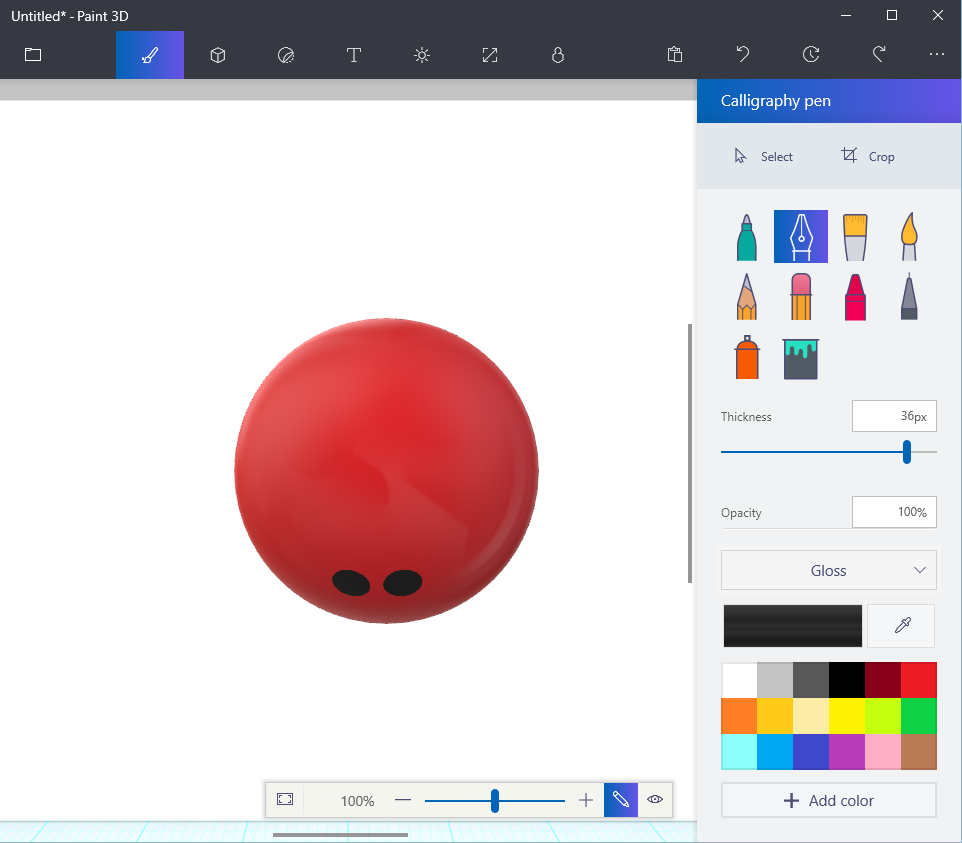
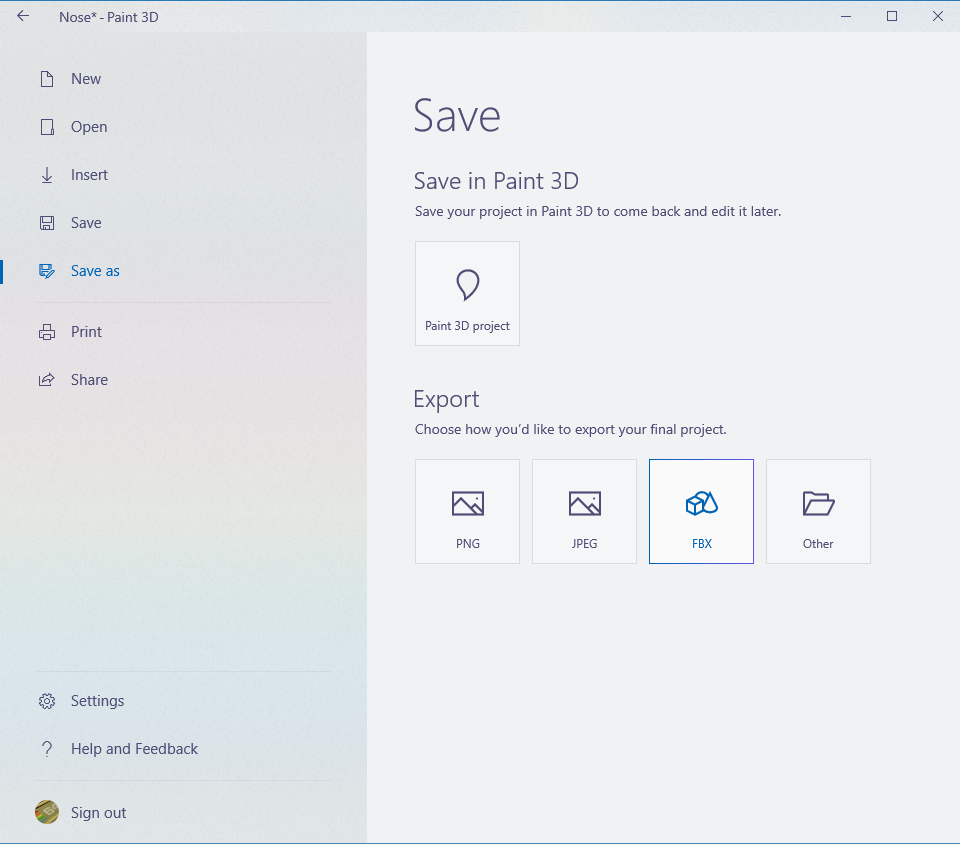

Creating 3D models of our products opens up a world of opportunities. We can 3D print prototype noses, render them in 3D to see how they look, and even view them in Virtual Reality!
3D Paint is a simple tool available in the Windows 10 Creators Update that allows us to create and paint 3D models. Perfect for this task!
This walkthrough assumes that you have: Windows 10 Creators Update Paint 3D
First we will create the nose 3D model with a base color.
The second task is to add details to the nose. You can use stickers, color variations and drawings. 1. On the menu at the top of the screen, click the brush icon (Art tools) to see the tools available for drawing.
Note: For these steps, it is important not to draw outside of the model on the white canvas because it will become part of the 3D model.
Use any of the art tools to draw on the model. Be creative! For our first prototype, we used the Calligraphy pen with the Thickness set to 36px to draw nostrils.

The Stickers menu (third icon from the left on the main menu) allows you to place stickers on the model. Feel free to play around with the various tools.
The last task is to save the model and export it to the Filmbox (FBX) format so we can use the model in Unity or BabylonJS. (For BabylonJS, we will convert it from .FBX to .OBJ. We will handle that in a future task.)
Back in the Paint3D editor, click the folder icon to open the Save menu again. Under Export, click FBX:

The Save As dialog appears. Save the FBX file in a location you can remember for the tasks ahead.
Congratulations, you now have a 3d Nose model that we can use in Unity or BablyonJS!
Our first Nose Prototype: Nose Prototype (FBX)